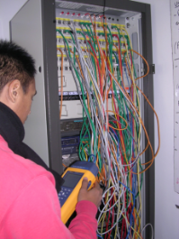

Réseau
Les élèves apprendront à mettre en place les services suivant :
- Serveur WEB
- Serveur AAA
- Serveur PABX
- Pare-feu (IPCOP)
- Serveur d’inventaire
- Serveur DHCP
- Serveur DNS
- Serveur FTP
Les élèves apprendront à câbler des baies de brassage avec des SWITCH, VLAN,STP,Routeur, bornes d ’accès WIFI, Modem.
Les protocoles : Ethernet Internet (TCP/IP) Serveur Radius, VPN